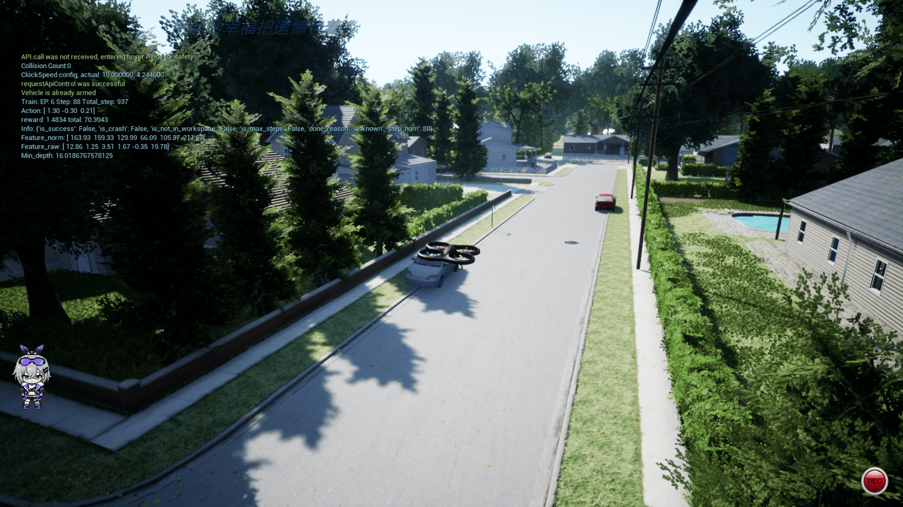
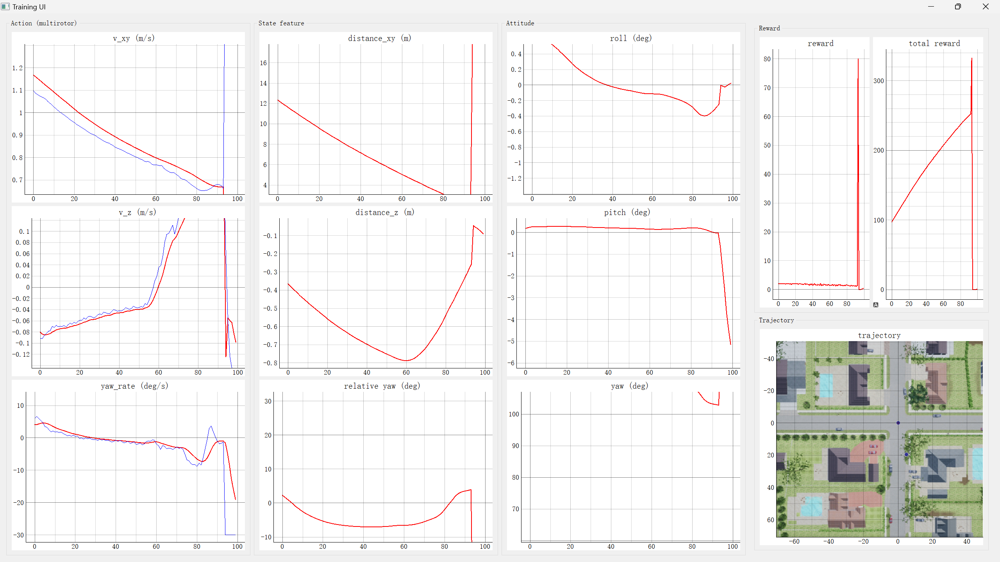
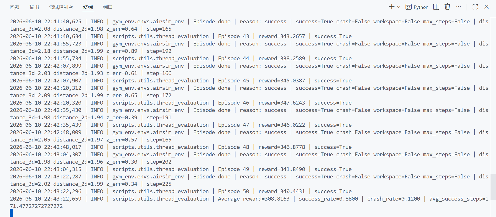

drone_path_learning
基于 AirSim、Gym 和 Stable-Baselines3 的无人机视觉导航强化学习项目。项目把 AirSim 多旋翼无人机封装为标准 Gym 环境 airsim-env-v0，支持深度图、向量特征和 LGMD 仿生视觉等观测方式，并提供 PPO、SAC、TD3 训练与 PyQt5 可视化评估流程。
目录
项目简介
drone_path_learning 面向无人机自主路径学习与避障导航实验，核心目标是让多旋翼无人机在 AirSim 仿真环境中根据视觉和状态信息学习从起点飞向目标点的控制策略。
项目提供了完整的强化学习实验闭环：
- 通过 AirSim 获取深度图、场景图、无人机位姿、速度和目标相对状态。
- 将仿真交互封装为 Gym 风格的
reset()、step(action)、observation_space和action_space。 - 使用 Stable-Baselines3 中的 PPO、SAC 或 TD3 训练策略。
- 通过自定义 CNN/MLP 特征提取器处理深度图和状态特征。
- 使用 PyQt5 界面实时展示动作、状态、姿态、奖励和轨迹。
- 将模型、TensorBoard 日志、配置文件和评估结果统一保存到
logs/。
适合用于：
- 无人机视觉导航强化学习实验；
- AirSim 与 Gym 环境封装学习；
- PPO/SAC/TD3 在连续控制任务上的对比；
- 深度图、向量特征、LGMD 特征在避障导航中的效果比较；
- 课程式训练、模型续训和策略评估。
核心特性
- AirSim 多旋翼仿真：通过
airsim.MultirotorClient控制无人机起飞、重置、移动、暂停仿真和读取传感器。 - Gym 环境接口：本地包
gym_env注册airsim-env-v0，可直接gym.make("airsim-env-v0")创建环境。 - 多算法支持：训练线程支持
PPO、SAC、TD3。 - 多观测模式：支持
depth、vector、lgmd三类感知方式。 - 多策略网络：支持
mlp、CNN_FC、CNN_GAP、CNN_GAP_BN、CNN_MobileNet、No_CNN。 - 3D/2D 控制切换：通过
navigation_3d控制动作维度，支持水平速度、垂直速度和偏航角速度控制。 - 课程式配置：提供多个
NH_center阶段配置，逐步调整目标距离、初始朝向和目标方向范围。 - 训练可视化：PyQt5 UI 展示动作、状态、姿态、奖励曲线和飞行轨迹。
- 评估结果落盘：保存轨迹、动作、状态、观测和汇总指标，便于后续分析。
- WandB 可选集成：配置
use_wandb=True后可同步 TensorBoard 与训练代码。
运行效果展示
训练可视化界面

评估可视化界面

评估结果展示

项目结构
src/drone_path_learning/
├── README.md
├── requirements.txt
├── main.py
├── configs/
│ ├── config_NH_center_Multirotor_3D.ini
│ ├── config_NH_center_Multirotor_Phase1_Fixed10m.ini
│ ├── config_NH_center_Multirotor_Phase2_Fixed20m.ini
│ ├── config_NH_center_Multirotor_Phase3A_Yaw90_20m.ini
│ ├── config_NH_center_Multirotor_Phase3B_Yaw90_Goal90_20m.ini
│ ├── config_NH_center_Multirotor_Phase3C_Yaw90_Goal180_20m.ini
│ └── config_NH_center_Multirotor_Phase3D_Yaw180_Goal180_20m.ini
├── gym_env/
│ ├── setup.py
│ └── gym_env/
│ ├── __init__.py
│ └── envs/
│ ├── airsim_env.py
│ └── dynamics/
│ └── multirotor_airsim.py
├── resources/
│ └── env_maps/
│ └── NH_center.png
├── scripts/
│ ├── train.py
│ ├── evaluation.py
│ ├── start_train_with_plot.py
│ ├── start_evaluate_with_plot.py
│ └── utils/
│ ├── custom_policy_sb3.py
│ ├── thread_train.py
│ ├── thread_evaluation.py
│ └── ui_train.py
└── tools/
├── map_generation/
│ └── map_generation.py
└── test/
├── env_test.py
└── torch_gpu_cpu_test.py
关键文件说明：
| 文件 | 作用 |
|---|---|
| main.py | 统一启动入口，支持训练、评估、Torch/CUDA 检查和环境测试 |
| gym_env/gym_env/init.py | 注册 Gym 环境 airsim-env-v0 |
| gym_env/gym_env/envs/airsim_env.py | AirSim Gym 环境主体，定义观测、奖励、终止条件和 PyQt 信号 |
| gym_env/gym_env/envs/dynamics/multirotor_airsim.py | 多旋翼动力学与 AirSim 控制接口 |
| scripts/utils/thread_train.py | 配置化训练线程，创建 SB3 模型并保存日志和模型 |
| scripts/utils/thread_evaluation.py | 评估线程，加载模型并保存评估轨迹与指标 |
| scripts/utils/custom_policy_sb3.py | 自定义 CNN/MLP 特征提取器 |
| scripts/utils/ui_train.py | PyQt5 可视化界面 |
技术架构
项目整体可以分为五层：
| 层级 | 核心功能 | 对应代码 |
|---|---|---|
| 仿真层 | AirSim 场景、无人机、深度相机、碰撞信息和仿真暂停/恢复 | multirotor_airsim.py |
| 环境层 | Gym 接口、观测构造、奖励计算、终止判断、工作空间约束 | airsim_env.py |
| 算法层 | PPO/SAC/TD3 初始化、超参数读取、模型训练、断点续训 | thread_train.py |
| 网络层 | CNN、MobileNet、No-CNN 和 MLP 特征提取 | custom_policy_sb3.py |
| 展示与分析层 | PyQt5 训练 UI、评估 UI、TensorBoard、WandB、.npy 结果保存 |
ui_train.py、thread_evaluation.py |
训练交互流程：
AirSim 场景
↓ 深度图 / 状态 / 碰撞信息
AirsimGymEnv.get_obs()
↓ depth / vector / lgmd 观测
Stable-Baselines3 策略网络
↓ action: 速度与偏航控制
MultirotorDynamicsAirsim.set_action()
↓ moveByVelocityAsync / moveByVelocityZAsync
AirSim 执行动作并返回新状态
↓
奖励计算、终止判断、日志和 UI 更新
环境准备
1. 前置条件
- Windows 或 Linux；
- Python 环境；
- AirSim 可运行，并已准备包含多旋翼无人机的仿真场景；
- 支持 CUDA 的 NVIDIA GPU 可显著提升训练速度，但不是必需；
- 如果使用可视化界面，需要本机图形界面支持 PyQt5 窗口显示。
项目依赖文件位于：
主要依赖包括：
airsim==1.6.0gym==0.17.3stable-baselines3torch==2.0.0+cu118torchvision==0.15.0+cu118opencv-contrib-pythonpyqt5pyqtgraphwandbtensorboard
2. 安装 Python 依赖
cd src/drone_path_learning
pip install -r requirements.txt
3. 安装本地 Gym 环境包
cd src/drone_path_learning
pip install -e gym_env
安装后，gym_env 会注册：
gym.make("airsim-env-v0")
4. 启动 AirSim
运行训练或测试前，需要先启动 AirSim 仿真器，并确保：
- AirSim 可以正常连接；
- 多旋翼无人机可用；
- 相机名称为代码中使用的
"0"； - 深度图接口
airsim.ImageType.DepthVis可以返回有效图像； - 当前场景与配置中的
env_name相匹配，例如NH_center。
快速开始
方式一：使用统一入口
cd src/drone_path_learning
python main.py
不传参数时，程序会显示交互菜单：
| 编号 | 模式 | 说明 |
|---|---|---|
| 1 | train |
启动带 PyQt5 UI 的训练 |
| 2 | eval |
启动带 PyQt5 UI 的评估 |
| 3 | torch_check |
检查 PyTorch / CUDA |
| 4 | env_test |
执行 AirSim 环境快速步进测试 |
也可以直接指定模式：
python main.py train -- --config configs/config_NH_center_Multirotor_3D.ini
python main.py env_test -- --config configs/config_NH_center_Multirotor_3D.ini
python main.py torch_check
说明：main.py 会把 -- 后面的参数透传给目标脚本。
方式二：直接启动训练可视化
cd src/drone_path_learning
python scripts/start_train_with_plot.py --config configs/config_NH_center_Multirotor_3D.ini
如果不指定 --config，默认使用：
configs/config_NH_center_Multirotor_Phase3D_Yaw180_Goal180_20m.ini
方式三：直接启动命令行训练
cd src/drone_path_learning
python scripts/utils/thread_train.py --config config_NH_center_Multirotor_3D
--config 既可以传 configs/ 下不带 .ini 后缀的配置名，也可以传显式 .ini 路径。
训练流程
训练入口推荐使用：
scripts/start_train_with_plot.py
内部核心训练逻辑位于：
训练过程如下：
- 读取
.ini配置文件。 - 创建
gym.make("airsim-env-v0")环境。 - 调用
env.set_config(cfg)设置场景、动力学、观测方式、奖励方式和动作空间。 - 根据
policy_name选择MlpPolicy或CnnPolicy。 - 根据
algo创建 PPO、SAC 或 TD3 模型。 - 如果配置了
resume_model_path，加载已有模型继续训练。 - 创建日志目录、模型目录、配置备份目录和数据目录。
- 使用
CheckpointCallback定期保存 checkpoint。 - 训练结束后保存最终模型
model_sb3.zip。
常用训练命令：
python scripts/start_train_with_plot.py --config configs/config_NH_center_Multirotor_3D.ini
python scripts/start_train_with_plot.py --config configs/config_NH_center_Multirotor_Phase1_Fixed10m.ini
python scripts/start_train_with_plot.py --config configs/config_NH_center_Multirotor_Phase3D_Yaw180_Goal180_20m.ini
当前提供的课程式配置：
| 配置文件 | 训练意图 |
|---|---|
config_NH_center_Multirotor_3D.ini |
基础 3D 导航配置，使用深度图和 CNN |
config_NH_center_Multirotor_Phase1_Fixed10m.ini |
固定 10m 目标距离，适合初期收敛 |
config_NH_center_Multirotor_Phase2_Fixed20m.ini |
固定 20m 目标距离，提高任务距离 |
config_NH_center_Multirotor_Phase3A_Yaw90_20m.ini |
扩展初始偏航角范围 |
config_NH_center_Multirotor_Phase3B_Yaw90_Goal90_20m.ini |
同时扩展初始朝向与目标方向 |
config_NH_center_Multirotor_Phase3C_Yaw90_Goal180_20m.ini |
继续扩大目标方向范围 |
config_NH_center_Multirotor_Phase3D_Yaw180_Goal180_20m.ini |
更完整的随机朝向/目标方向训练配置 |
评估流程
评估入口推荐使用：
scripts/start_evaluate_with_plot.py
示例：
cd src/drone_path_learning
python scripts/start_evaluate_with_plot.py --eval-path logs/NH_center/<your_run_dir> --eval-eps 50
可选参数：
| 参数 | 默认值 | 说明 |
|---|---|---|
--eval-path |
示例训练目录 | 训练产物目录，内部应包含 config/ 和 models/ |
--config |
<eval-path>/config/config.ini |
指定评估配置 |
--model-file |
<eval-path>/models/model_sb3.zip |
指定模型文件 |
--eval-eps |
50 |
评估回合数 |
--eval-env |
不覆盖 | 覆盖配置中的 env_name |
--eval-dynamics |
不覆盖 | 覆盖配置中的 dynamic_name |
命令行评估：
python scripts/evaluation.py --mode single --eval-path logs/NH_center/<your_run_dir> --eval-eps 50
批量评估：
python scripts/evaluation.py --mode multi --eval-logs-path logs/NH_center --eval-logs-name NH_center --eval-env NH_center --eval-dynamics Multirotor
评估会保存：
<eval-path>/eval_<eval_eps>_<env_name>_<dynamic_name>/
├── traj_eval.npy
├── action_eval.npy
├── state_eval.npy
├── obs_eval.npy
└── results.npy
results.npy 包含：
[平均奖励, 成功率, 碰撞率, 成功回合平均步数]
配置文件说明
配置文件采用 .ini 格式，核心分区包括：
[options]
| 参数 | 示例 | 说明 |
|---|---|---|
env_name |
NH_center |
环境名称，目前代码支持 NH_center、NH_tree、City、City_400、Tree_200、SimpleAvoid、Forest、Trees |
dynamic_name |
Multirotor |
动力学类型，清理后的代码仅支持 Multirotor |
navigation_3d |
True |
是否启用 3D 动作空间 |
using_velocity_state |
True |
状态特征中是否包含速度信息 |
perception |
depth / vector / lgmd |
观测模式 |
algo |
PPO / SAC / TD3 |
强化学习算法 |
policy_name |
CNN_FC / mlp |
策略网络类型 |
net_arch |
[256, 128] |
Actor/Critic 或 MLP 网络结构 |
activation_function |
relu / tanh |
激活函数 |
cnn_feature_num |
64 |
CNN 或视觉分支输出特征数 |
keyboard_debug |
False |
是否开启键盘步进调试 |
generate_q_map |
False |
是否生成 Q 值地图，主要用于 TD3/SAC |
use_wandb |
False |
是否启用 WandB |
total_timesteps |
250000 |
训练总步数 |
resume_model_path |
空或模型路径 | 续训模型路径 |
reset_num_timesteps |
True |
续训时是否重置 SB3 时间步 |
checkpoint_freq |
10000 |
checkpoint 保存间隔 |
[environment]
| 参数 | 示例 | 说明 |
|---|---|---|
max_depth_meters |
15 |
深度图裁剪最大距离 |
screen_height / screen_width |
48 / 64 |
输入图像尺寸 |
reward_type |
reward_distance_based |
奖励函数类型 |
crash_distance |
1.0 |
深度碰撞阈值 |
depth_collision_percentile |
5 |
使用深度图低分位估计障碍距离 |
depth_collision_roi_top_ratio |
0.65 |
碰撞检测使用的图像上部 ROI 比例 |
accept_radius |
4 |
到达目标判定半径 |
success_check_mode |
planar_with_altitude |
成功判定模式 |
success_altitude_tolerance |
8.0 |
高度误差容忍度 |
max_episode_steps |
900 |
单回合最大步数 |
start_position |
[0, 0, 5] |
可选，覆盖默认起点 |
start_random_angle |
3.14159265359 |
可选，起始偏航随机范围 |
goal_distance |
20 |
可选，目标距离 |
goal_random_angle |
3.14159265359 |
可选，目标方向随机范围 |
[DRL]
| 参数 | 说明 |
|---|---|
gamma |
折扣因子 |
learning_rate |
学习率 |
n_steps |
PPO 每轮 rollout 步数 |
batch_size |
batch 大小 |
n_epochs |
PPO 每轮更新 epoch 数 |
gae_lambda |
GAE 参数 |
ent_coef |
熵奖励系数 |
vf_coef |
Value loss 系数 |
clip_range |
PPO clip 范围 |
target_kl |
PPO KL 早停阈值 |
max_grad_norm |
梯度裁剪 |
buffer_size |
SAC/TD3 回放缓冲区大小，相关配置中使用 |
learning_starts |
SAC/TD3 开始训练前的随机探索步数 |
train_freq |
SAC/TD3 训练频率 |
gradient_steps |
SAC/TD3 每次训练的梯度步数 |
action_noise_sigma |
SAC/TD3 动作噪声强度 |
[multirotor]
| 参数 | 示例 | 说明 |
|---|---|---|
dt |
0.1 |
控制步长 |
acc_xy_max |
2.0 |
水平速度变化限制 |
v_xy_max |
5 |
最大水平速度 |
v_xy_min |
0.5 |
最小水平速度 |
v_z_max |
2.0 |
最大垂直速度 |
yaw_rate_max_deg |
30.0 |
最大偏航角速度 |
action_smoothing_alpha |
0.25 |
动作平滑系数 |
yaw_rate_change_max_deg |
5.0 |
单步偏航角速度变化限制 |
观测空间与动作空间
观测空间
环境根据 perception 返回不同观测：
perception |
观测形状 | 说明 |
|---|---|---|
depth |
(screen_height, screen_width, 2) |
两通道图像：深度图通道 + 状态特征嵌入通道 |
vector |
(1, cnn_feature_num + state_feature_length) |
深度图分块特征 + 状态特征 |
lgmd |
(1, cnn_feature_num + state_feature_length) |
LGMD 输出分块特征 + 状态特征 |
depth 模式处理逻辑：
- 读取 AirSim 深度图。
- resize 到配置中的
screen_width x screen_height。 - 将深度限制在
max_depth_meters内。 - 归一化并反转，使近处障碍更醒目。
- 将状态特征写入第二通道左上角。
vector 模式处理逻辑：
- 读取深度图。
- 将图像划分为 5 个水平区域。
- 每个区域取最大激活值，形成 5 维视觉特征。
- 拼接无人机状态特征。
状态特征由 MultirotorDynamicsAirsim._get_state_feature() 生成，通常包含：
- 到目标点的水平距离；
- 当前高度相对目标高度的误差；
- 指向目标的相对偏航角；
- 水平速度；
- 垂直速度；
- 偏航角速度。
如果 navigation_3d=False 或 using_velocity_state=False，状态特征维度会相应减少。
动作空间
动作空间由 multirotor_airsim.py 定义。
3D 导航时：
| 动作索引 | 含义 | 范围 |
|---|---|---|
| 0 | 水平速度 v_xy |
[v_xy_min, v_xy_max] |
| 1 | 垂直速度 v_z |
[-v_z_max, v_z_max] |
| 2 | 偏航角速度 yaw_rate |
[-yaw_rate_max_rad, yaw_rate_max_rad] |
2D 导航时：
| 动作索引 | 含义 | 范围 |
|---|---|---|
| 0 | 水平速度 v_xy |
[v_xy_min, v_xy_max] |
| 1 | 偏航角速度 yaw_rate |
[-yaw_rate_max_rad, yaw_rate_max_rad] |
动作在执行前会经过：
- 范围裁剪；
- 指数平滑；
- 水平加速度限制；
- 偏航角速度变化率限制；
- AirSim
moveByVelocityAsync或moveByVelocityZAsync控制。
奖励与终止条件
默认推荐奖励类型为：
reward_type = reward_distance_based
默认奖励函数 compute_reward() 综合考虑：
- 向目标点靠近的距离增量奖励；
- 朝向目标方向的额外奖励；
- 偏航角速度惩罚；
- 垂直速度和高度误差惩罚；
- 相对目标方向偏差惩罚；
- 障碍物距离过近惩罚；
- 成功到达奖励；
- 碰撞、飞出工作空间、超时惩罚。
其他奖励函数：
| 奖励类型 | 对应方法 | 说明 |
|---|---|---|
reward_distance_based / reward_default |
compute_reward |
当前默认距离进展奖励 |
reward_with_action |
compute_reward_with_action |
更强调动作代价 |
reward_new |
compute_reward_multirotor_new |
旧版多旋翼奖励 |
reward_lqr |
compute_reward_lqr |
LQR 风格状态/动作二次惩罚 |
reward_final |
compute_reward_final |
综合距离、姿态、障碍和动作代价 |
回合终止条件：
| 条件 | 说明 | info 字段 |
|---|---|---|
| 到达目标 | 满足 accept_radius 和高度容忍度 |
is_success=True |
| 碰撞 | AirSim 物理碰撞或深度估计障碍距离小于 crash_distance |
is_crash=True |
| 飞出工作空间 | 超出当前环境设定的 x/y/z 范围 | is_not_in_workspace=True |
| 超过最大步数 | step_num >= max_episode_steps |
is_max_steps=True |
info["done_reason"] 会返回：
success / collision / out_of_workspace / max_steps
训练产物
每次训练默认输出到：
src/drone_path_learning/logs/<env_name>/<timestamp>_<dynamic_name>_<policy_name>_<algo>/
目录示例：
logs/NH_center/2026_05_31_18_25_Multirotor_mlp_PPO/
├── tb_logs/
├── models/
│ ├── model_sb3.zip
│ ├── model_sb3_ckpt_10000_steps.zip
│ └── ...
├── config/
│ └── config.ini
└── data/
各目录含义：
| 目录 | 说明 |
|---|---|
tb_logs/ |
TensorBoard 日志 |
models/ |
最终模型和 checkpoint |
config/ |
本次训练使用的配置备份 |
data/ |
Q 值地图等额外数据 |
查看 TensorBoard：
cd src/drone_path_learning
tensorboard --logdir logs
测试工具
PyTorch / CUDA 检查
cd src/drone_path_learning
python tools/test/torch_gpu_cpu_test.py
该脚本会输出：
- PyTorch 版本；
- PyTorch 编译使用的 CUDA 版本；
- 当前 CUDA 是否可用；
- GPU 名称；
- cuDNN 是否可用。
AirSim 环境快速测试
cd src/drone_path_learning
python tools/test/env_test.py --config configs/config_NH_center_Multirotor_3D.ini
该脚本会：
- 创建
airsim-env-v0； - 加载配置；
- 重置 AirSim 环境；
- 使用固定动作执行 50 步；
- 输出平均 FPS；
- 结束时调用
env.close()释放 AirSim 控制。
常见问题
1. gym.make("airsim-env-v0") 找不到环境
可能原因：本地 gym_env 没有安装。
解决方法：
cd src/drone_path_learning
pip install -e gym_env
2. AirSim 连接失败
可能原因：
- AirSim 仿真器没有启动；
- AirSim RPC 端口不可用；
- 当前环境不是多旋翼配置；
- Python 环境中的
airsim包版本不兼容。
处理建议：
- 先手动打开 AirSim 场景；
- 确认无人机可以正常起飞；
- 再运行
tools/test/env_test.py。
3. 深度图读取失败或一直重试
代码会在 responses[0].width == 0 时持续重试。常见原因是相机名称或 AirSim settings 不匹配。
检查点：
- 相机名称是否为
"0"； - AirSim 是否启用深度相机；
- 场景是否已完全加载；
- 仿真窗口是否处于可交互状态。
4. 训练 UI 无法打开
可能原因：
- 当前运行环境没有图形界面；
- PyQt5 安装失败；
- 远程服务器未配置 X11/桌面转发。
可先使用命令行训练入口：
python scripts/utils/thread_train.py --config config_NH_center_Multirotor_3D
5. GPU 不可用
先运行：
python tools/test/torch_gpu_cpu_test.py
如果 CUDA 不可用，训练会退回 CPU，速度会明显变慢。检查 NVIDIA 驱动、CUDA 运行时和 PyTorch CUDA 版本是否匹配。
6. 模型评估时找不到配置或模型
评估默认查找：
<eval-path>/config/config.ini
<eval-path>/models/model_sb3.zip
如果文件名不同，显式指定：
python scripts/start_evaluate_with_plot.py ^
--eval-path logs/NH_center/<your_run_dir> ^
--config logs/NH_center/<your_run_dir>/config/config.ini ^
--model-file logs/NH_center/<your_run_dir>/models/model_sb3.zip
7. 续训没有生效
检查配置：
resume_model_path = logs\NH_center\<run>\models\model_sb3.zip
reset_num_timesteps = False
如果 resume_model_path 为空，训练会从头初始化模型。
扩展方向
- 更多 AirSim 场景
- 增加城市、森林、室内、窄通道等任务；
- 为不同场景补充地图截图和起终点示意图；
-
将
resources/env_maps/中的地图与评估轨迹自动叠加。 -
更完整的课程学习
- 按目标距离、随机朝向、障碍密度、高度变化逐级训练；
- 自动从上一阶段最优模型续训下一阶段；
-
记录每阶段成功率、碰撞率和平均步数。
-
更多感知模型
- 对比深度图 CNN、向量特征、LGMD、光流、语义分割特征；
- 引入轻量化视觉 backbone；
-
加入注意力机制分析避障决策区域。
-
强化学习算法对比
- 系统比较 PPO、SAC、TD3 的收敛速度、稳定性和安全性；
- 增加 HER、BC、离线 RL 或模仿学习；
-
添加安全约束或代价函数用于 Safe RL。
-
评估与可视化增强
- 自动生成成功/失败轨迹图；
- 绘制深度最小距离、偏航误差、动作平滑度曲线；
- 将评估结果导出为表格和报告。
参考入口
- 项目源码: src/drone_path_learning
- 参考仓库: DRL-DroneNavigation